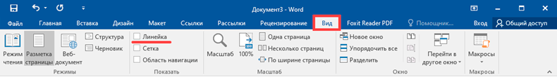

Программа Word
В этом уроке я расскажу о программе Microsoft Word (ворд). Что это за приложение, как его открыть на компьютере. Как пользоваться программой: печатать текст и работать с документами.
Что такое Word
Программа представляет собой белый лист бумаги, на котором, используя клавиатуру, печатают текст. Также на нём располагают другие элементы: таблицы, картинки и прочее.
Если нужно напечатать много текста и на один лист он не поместится, программа автоматически добавит ещё страницы.
Набранный текст можно отредактировать: изменить размер букв, шрифт, начертание и многое другое. Для этого в Ворде есть специальная панель в верхней части. На ней находятся кнопки редактирования.
Но это не все кнопки. Остальные расположены на других вкладках.
Как открыть программу
Приложение Word запускается через вот такую иконку на Рабочем столе компьютера:
Если значка нет, ищите его среди всех программ в Пуске.
На заметку. Чтобы вынести иконку на экран, зажмите ее левой кнопкой мыши и перетяните на Рабочий стол. Или щелкните по ней правой кнопкой мыши, выберите «Отправить» – «Рабочий стол (создать ярлык)».

Вот как выглядит приложение Microsoft Word 2016-2019. Для начала работы нажмите на пункт «Новый документ».
Откроется пустой лист. Он как будто обрезан, но это из-за того, что страница не поместилась на экран. Чтобы ее увидеть целиком, покрутите колесико на мышке или подвиньте ползунок с правой стороны.
Есть более ранняя 2010-2013 года - выглядит она примерно так же. Еще часто можно встретить версию 2007 года. Она выглядит немного иначе, но имеет все необходимые инструменты.
На некоторых старых компьютерах можно встретить и версию 2003 года. У нее другой дизайн, меньше функций. Но с основными задачами программа справляется.
Основы работы в Ворде
Печать текста
Рабочая область приложения – белый лист, на котором мигает палочка. Этим мигающим курсором отмечено то место, где будет набираться текст.
По умолчанию он установлен в начале листа, в левом верхнем углу. Но не в самом верху страницы, так как у нее есть поля – пустые области с каждой стороны.
Без полей с документом работать неудобно, да и при распечатке часть слов обрежется. Поэтому пустое поле должно быть с каждой стороны: сверху, снизу, слева и справа.
Изменить масштаб страницы, то есть приблизить или отдалить ее, можно через ползунок в правом нижнем углу. Но учтите, что таким образом поменяется только отображение листа, но не него реальный размер.
Для печати текста установите нужную раскладку (язык) на панели задач – в правом нижнем углу экрана. Это можно сделать мышкой или через сочетание клавиш Shift и Alt.
- Для печати большой буквы нажмите Shift и, не отпуская, кнопку с буквой.
- Для печати знака в верхнем ряду клавиш (там, где цифры) также зажимайте Shift.
- Для удаления используйте клавишу Backspace. Обычно она находится после кнопки = в верхнем ряду и на ней нарисована стрелка влево.
- Для перехода на новую строку используйте клавишу Enter. А для удаления строки – Backspace.
- Промежутки между словами делайте пробелом – самой длинной кнопкой в нижней части. Между словами должен быть только один пробел (ни два, ни три).
- Точка в русской раскладке находится в нижнем ряду клавиш – после буквы Ю.
- Запятая в русской раскладке – это так же кнопка, что и точка, но нажимать ее нужно вместе с Shift.
Сохранение
Набранный текст не будет зафиксирован до тех пор, пока вы его не сохраните. Можно набрать хоть сто страниц, но они не останутся в компьютере.
Для сохранения используйте кнопку с изображением дискеты в верхнем левом углу программы. Или «Файл» - «Сохранить как…».
Если документ еще ни разу не записывался, то появится окно с выбором места, куда его отправить. Нажмите «Обзор».
Выскочит окошко сохранения. Перейдите через него в нужную папку, напечатайте название и нажмите «Сохранить». Документ запишется в файл. Найти его можно будет в указанном при сохранении месте.
А если документ уже был записан, то при нажатии на иконку дискеты окошко не появится. Новый документ автоматически перезапишется вместо старого файла (обновится).
Чтобы узнать, куда именно он был записан, нажмите «Файл» - «Сохранить как…». Появится окошко записи, где будет указана папка, в которой находится этот файл.
Редактирование текста
Для изменения внешнего вида текста используйте вкладку «Главная» на панели инструментов вверху. Здесь можно настроить шрифт, выравнивание, начертание и другие параметры.
Если необходимо изменить уже напечатанный текст, то сначала его нужно выделить. Для этого поставить курсор в самое начало (перед первой буквой), зажать левую кнопку мыши и обвести текст. Он обозначится другим цветом.
Затем выбрать нужные параметры во вкладке «Главная» в верхней части. Все изменения затронут только выделенную часть.
Для отмены используйте кнопку со стрелкой в верхнем левом углу программы.
Основные инструменты редактирования текста:
– шрифт: внешний вид букв.
– размер шрифта.
– начертание: полужирный, курсив, подчеркнутый.
– выравнивание: по левому краю, по центру, по правому краю, по ширине.
– интервал: расстояние между строками и абзацами.
– маркированный список.
При наведении курсора на любую из кнопок на панели инструментов, появится всплывающая подсказка с описанием.
Оформление
Если составляете документ исключительно для себя, то оформляйте его так, как вам удобнее. Но если нужно отправить файл другим людям, лучше следовать определенным правилам:
- В начале предложения первая буква печатается прописной (большой), остальные – строчными (маленькими).
- Заголовок набирается с большой буквы. После него точка не ставится.
- После знаков препинания ставится один пробел. Перед ними пробел не ставится. Например, цвет: белый, синий, красный.
- После кавычек и скобок пробел не ставится. Например, «Преступление и наказание».
- Тире отделяется пробелами с двух сторон. Дефис не отделяется ни одним пробелом.
- Текст должен быть структурированным: разбит на абзацы, иметь заголовки разных уровней. Желательно использовать маркированные и нумерованные списки.
Что касается требований к шрифту, они зависят от типа документа. Если речь идет о реферате, курсовой или дипломной работе, то обычно требования указываются отдельно.
Универсальные правила оформления:
- Вид шрифта: Times New Roman или Arial.
- Размер шрифта: основной текст – 12 или 14, заголовки – 16, подзаголовки – 14, таблицы – 10 или 12.
- Выравнивание: основной текст – по ширине, заголовки – по центру.
- Междустрочный интервал – 1,5.
- Поля: левое — не менее 30 мм, правое — не менее 10 мм, верхнее и нижнее — не менее 20 мм.
Другие возможности программы Word
Добавить таблицу, изображение, фигуру. Делается это через вкладку «Вставка». Еще через нее можно вставить символ, диаграмму, титульный лист, сделать разрыв. А также добавить номера страниц.

Настроить поля, размер страниц, ориентацию. Эти инструменты находятся во вкладке «Макет». Также здесь можно настроить отступы и интервалы, выполнить автоматическую расстановку переносов.
Линейка и масштаб. Через вкладку «Вид» можно показать или скрыть линейку, настроить масштаб и визуальное представление страниц.
Вывод на печать. Для распечатки на принтере нажмите на «Файл» и выберите «Печать». Сделайте необходимые настройки и нажмите на кнопку «Печать».
В версии 2016-2021 для возврата к редактированию документа, щелкните по кнопке со стрелкой в верхнем левом углу.